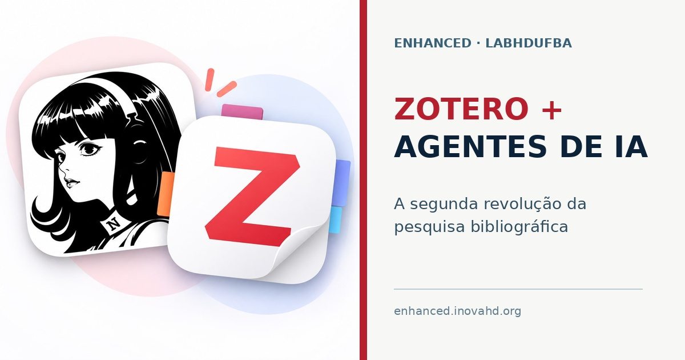

Zotero, agentes de IA e a segunda revolução da pesquisa bibliográfica
Idioma:

Uma das primeiras ferramentas tecnológicas que aprendi a usar na pesquisa em ciências sociais foi um gerenciador de referências bibliográficas.
Sua função parece simples: organizar referências em um banco de dados. Cada registro reúne informações como autoria, título, data de publicação e edição, além de identificar o tipo de documento, seja livro, artigo, capítulo, vídeo, tese ou relatório. Esses dados permitem inserir citações nos textos e gerar automaticamente a bibliografia no formato desejado.
Com o tempo, porém, um gerenciador de referências se torna algo mais importante: uma memória organizada da pesquisa.
Do EndNote ao Zotero
Só conheci esse tipo de ferramenta no início do doutorado. Naquela época, meu orientador pagou e compartilhou comigo uma assinatura do EndNote. Passei a utilizá-lo para inserir referências nos documentos digitais que estava escrevendo.
Já no final do doutorado, descobri o Zotero, um software gratuito e de código aberto voltado ao gerenciamento individual e colaborativo de referências bibliográficas.
Para mim, essa mudança foi revolucionária. O Zotero permitia construir bibliotecas compartilhadas, organizar coletivamente um campo de estudos e manter acessível o conjunto de textos com os quais uma pesquisa dialoga.
Citar é participar de uma conversa
A importância do Zotero está ligada ao sentido epistemológico da citação.
A ciência é uma grande conversa. Dialogamos com a produção intelectual do passado e com o que está sendo produzido no presente. Concordamos com determinadas interpretações, refutamos outras, retomamos problemas antigos e formulamos novas perguntas.
Citar significa situar uma afirmação nessa conversa. A referência identifica nossos interlocutores, explicita dívidas intelectuais e permite que outras pessoas reconstruam o caminho percorrido por um argumento. Debater, concordar e refutar fazem parte do substrato da citação.
Por isso, uma biblioteca bibliográfica não é apenas um arquivo auxiliar. Ela materializa parte da orientação teórica e metodológica de uma pesquisa.
Uma biblioteca coletiva no LABHDUFBA
Desde então, o Zotero se tornou praticamente obrigatório nas pesquisas que desenvolvo e nas atividades do Laboratório de Humanidades Digitais da UFBA, o LABHDUFBA.
Pesquisadores em diferentes níveis de formação, da iniciação científica ao doutorado, utilizam a ferramenta. Costumo resumir essa regra de maneira bastante direta:
Eu não leio texto que não esteja no Zotero.
A frase pode soar exagerada, mas expressa uma prática importante. Quando um texto entra no Zotero, ele deixa de ser um arquivo isolado no computador de alguém. Passa a integrar um acervo coletivo, pesquisável e organizado. Pode receber tags, notas, anexos e relações com outros documentos.
Hoje, mantemos uma biblioteca colaborativa ampla sobre humanidades digitais e áreas correlatas, como história digital, sociologia digital e ciência social computacional. Esse acervo sustenta parte de nossa orientação teórico-metodológica e preserva a memória intelectual das pesquisas desenvolvidas no laboratório.
O soterramento de dados
A produção acadêmica contemporânea enfrenta um problema cada vez mais evidente: a quantidade de material publicado supera nossa capacidade individual de acompanhar, organizar e ler tudo o que pode ser relevante.
Tenho chamado esse problema de soterramento de dados.
Há muitos artigos, livros, relatórios, preprints e outros documentos sendo produzidos continuamente. Encontrar um texto relevante já é difícil. Mais difícil ainda é lembrar que ele existe, registrar por que ele importa e recuperá-lo no momento adequado.
O problema não é apenas o acesso à informação. Precisamos criar condições para selecionar, organizar, relacionar e recuperar materiais em meio a um fluxo permanente de publicações.
O Zotero já oferecia uma resposta parcial a esse problema. Ainda restava, porém, muito trabalho manual: revisar metadados, criar coleções, aplicar tags, localizar duplicações, produzir fichamentos e reorganizar bibliotecas acumuladas durante anos.
A integração com agentes de inteligência artificial
Nos últimos dois meses, graças ao trabalho de Lídia Belas, bolsista de iniciação científica do laboratório, integramos o Zotero aos nossos agentes de inteligência artificial.
Essa integração produziu aquilo que considero uma segunda revolução do Zotero.
A primeira mudança aparece na organização da biblioteca. Os agentes auxiliam na revisão de coleções, na aplicação de tags e na correção de informações incompletas ou incorretas nas referências. Tarefas que antes precisavam ser realizadas manualmente, item por item, agora podem ser executadas em escala.
A segunda mudança diz respeito à incorporação de novas publicações. Artigos identificados como relevantes podem ser coletados, inseridos no Zotero e acompanhados de um fichamento inicial. Quando retornamos a esse material, já encontramos uma referência organizada, com informações que facilitam sua recuperação e contextualização.
O fichamento produzido pelos agentes não encerra o trabalho intelectual. Ele prepara o material para a leitura, a verificação e a interpretação humanas. Os pesquisadores continuam responsáveis por avaliar argumentos, confrontar evidências, identificar limites e acrescentar os insights que surgem durante a leitura.
A inteligência artificial amplia nossa capacidade de organização e recuperação. A construção do sentido continua sendo uma tarefa humana.
Uma infraestrutura de pesquisa
Não vou me alongar, neste texto, nos aspectos técnicos da integração entre o Zotero e os agentes de IA. O que importa, por enquanto, é a mudança na escala e na forma de trabalhar.
O Zotero começou, para mim, como uma ferramenta para inserir citações em documentos. Depois, tornou-se o espaço de organização de uma biblioteca coletiva. Agora, integrado aos agentes de inteligência artificial, passa a funcionar como uma infraestrutura ativa de pesquisa: recebe, organiza e ajuda a recuperar um acervo em permanente expansão.
É isso que chamo de segunda revolução do Zotero.
Para a pesquisa que desenvolvemos no LABHDUFBA, esse é um caminho sem volta.
Observação: este texto foi elaborado a partir de uma fala de Leonardo F. Nascimento, com auxílio do Hermes Agent na transcrição, na revisão e na tradução para o inglês.
One of the first digital tools I learned to use in social science research was a reference manager.
Its purpose seems simple: to organize references in a database. Each record brings together information such as author names, title, publication date, and edition, and identifies the document type: book, article, chapter, video, thesis, or report. This information makes it possible to insert citations into documents and automatically generate bibliographies in the desired style.
Over time, however, a reference manager becomes something more important: a way to organize and preserve the memory of our research.
From EndNote to Zotero
I did not discover these tools until I began my doctorate. At the time, my supervisor paid for an EndNote subscription and shared it with me. I began using it to insert references into the digital documents I was drafting.
Toward the end of my doctorate, I discovered Zotero, free and open-source software for managing references individually or collaboratively.
For me, that change was revolutionary. Zotero made it possible to build shared libraries, work together to organize the literature in a field, and keep the body of texts that a research project engages with readily accessible.
Citing means taking part in a conversation
Zotero’s importance is tied to the epistemological role of citation.
Scholarly research is a vast conversation. We engage with intellectual work from the past and with research being produced in the present. We agree with some interpretations, refute others, revisit old problems, and pose new questions.
To cite is to situate a claim within that conversation. References identify those whose work we engage with, acknowledge our intellectual debts, and allow others to trace the development of an argument. Debate, agreement, and refutation are fundamental to citation.
A reference library is therefore more than a supporting archive. It embodies part of a research project’s theoretical and methodological orientation.
Data overload
Academic research today faces an increasingly clear problem: the volume of published material exceeds our individual capacity to keep track of, organize, and read everything that might be relevant.
I refer to this problem as data overload.
Articles, books, reports, preprints, and other documents are continually being produced in large numbers. Finding a relevant text is difficult enough. It is harder still to remember that it exists, record why it matters, and retrieve it when needed.
The problem is not simply access to information. We also need ways to select, organize, make connections between, and retrieve materials amid a continuous stream of publications.
Zotero already offered a partial solution to this problem. Much of the work still had to be done manually, however: reviewing metadata, creating collections, adding tags, identifying duplicates, preparing structured reading notes, and reorganizing libraries built up over the years.
Integrating Zotero with AI agents
Over the past two months, thanks to the work of Lídia Belas, an undergraduate research fellow at the laboratory, we have integrated Zotero with our artificial intelligence agents.
This integration has brought about what I regard as Zotero’s second revolution.
The first change concerns library organization. Agents help review collections, add tags, fill gaps in bibliographic information, and correct inaccuracies. Tasks that previously had to be performed manually, one item at a time, can now be carried out at scale.
The second change concerns the addition of new publications. Articles identified as relevant can be collected, added to Zotero, and accompanied by an initial set of structured reading notes. When we return to this material, we find an organized bibliographic record, with information that helps us retrieve the material and place it in context.
Agent-generated reading notes are not the end of the intellectual work. They prepare the material for human reading, verification, and interpretation. Researchers remain responsible for evaluating arguments, weighing evidence, identifying limitations, and adding the insights that emerge as they read.
Artificial intelligence expands our ability to organize and retrieve material. Making sense of it remains a human task.
A research infrastructure
I will not go into detail here about the technical aspects of integrating Zotero with AI agents. What matters for now is the change in scale and in how we work.
For me, Zotero began as a tool for inserting citations into documents. It later became a place to organize a shared library. Now, integrated with artificial intelligence agents, it serves as an active research infrastructure: taking in new material, organizing it, and helping us retrieve items from an ever-growing collection.
This is what I call Zotero’s second revolution.
For the research we conduct at LABHDUFBA, there is no turning back.
Note: this article is based on spoken remarks by Leonardo F. Nascimento, with assistance from Hermes Agent in transcription, editing, and translation into English.